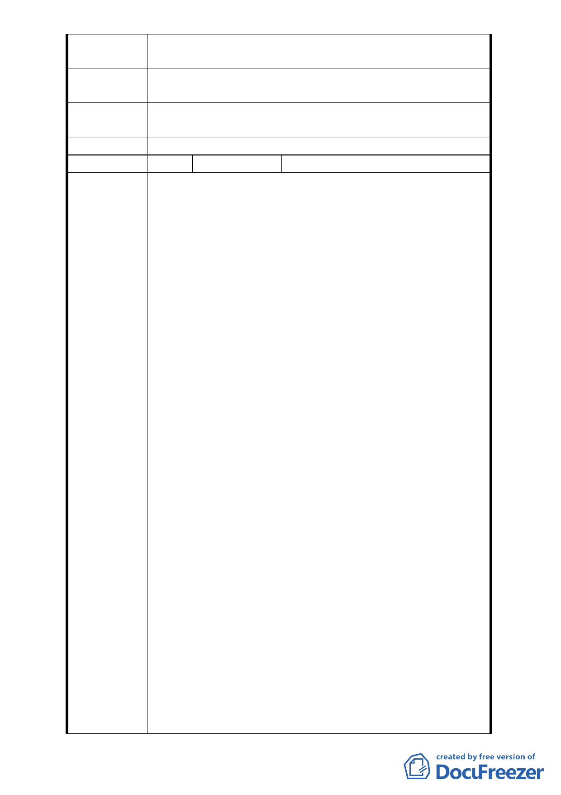

幫兇禍首？故請貴會及委員諸公開張聖聽、明察秋毫，
建請即依原規劃案內容，積極推動實施。
建議辦法
敬請明察秋毫，不應為紫藤樓社區少數住戶，偏頗歪曲言
論誤導，建請應依原規劃案內容，積極推動實施。
專案小組審
查結論
同陳情案 1
委員會決議 同陳情案 1
編號
陳情理由
19 陳情人 高浩傑
主旨：有關 貴會續審「變更臺北市文山區景美溪左岸（萬
壽橋至道南橋間）機關用地、公園用地、道路用地
為第三種住宅區、道路用地、公園用地細部計畫案」
乙案，敬請 市府秉持堅持市政建設決心、體恤多數
民眾福祉利益，明察秋毫，不應受「紫藤樓社區少
數住戶」的偏頗言論誤導，影響社區多數民眾福祉，
建請 市府應依原規劃案內容，積極推動實施。
說明：
1.貴會於中華民國 98 年 6 月 30 日下午召開第 595 次委員
會議，審議該案。
2.該次審查會議因多數地主未能知悉該項會議之召開，所
以多數地主都不克列席與會。
3.該次審查會議登記發言"陳情"的民眾，「紫藤樓社區少數
住戶」參與發言佔了登記"陳情民眾"的大多數，同時，
這些「紫藤樓社區少數住戶」個個有備而來(我個人當天
有列席旁聽與會)，Power Point 簡報以及一系列攸關其
住戶權益事項，均有整體規劃演出，其內容簡述如下:
(1).該變更計畫實現以後，在「紫藤樓社區」前面
增加之任何建築物，將嚴重影響社區河岸視野以
及社區房價。
(2).位於行水區堤防內之河濱公園，會有淹水之顧
慮，基本上稱不上是公園，加上因為有堤防阻
隔，不方便老幼進出。
(3).文山區公園綠地已經不足，同時該區為政大商
圈唯一的公園預定地，如果再被縮減變更，將再
彰顯綠地的不足。
(4).若是該地區仍被設定做為公園綠地，其地下室
將可廣設地下停車場，解決停車問題。
4.綜觀「紫藤樓社區少數住戶」發言內容，我個人對其發
言內容之澄清視聽陳情意見:
(1).「紫藤樓社區少數住戶」主張不要在「紫藤樓社
區」的前面增加任何建築物，因為如此將妨礙
「紫藤樓社區」的河岸視野，降低社區地價以
- 16 -